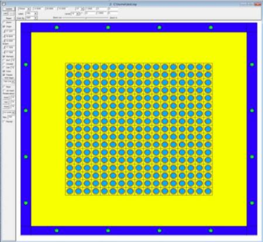

class: center,middle ### A Borated-Alumimum Cask Design for Used Fuel Cooling #### Part 2 - Regulatory compliance **A Center for Advanced Energy Studies Collaboration** **University of Idaho-Idaho Falls** **Boise State University** **with** **Sakae Casting USA, LLC** ##### .right[ Bob Borrelli University of Idaho-Idaho Falls Center for Advanced Energy Studies @TheDoctorRAB ] ##### .right[ American Nuclear Society Annual Meeting 17-21, June 2018 Philadelphia, PA ] --- class: center,middle ## Try not to repeat the same material #### Quick review though --- ## Allow me to introduce the team again Prof. Bob Borrelli, University of Idaho-Idaho Falls (CAES) - ME! Prof. Richard N. Christensen, University of Idaho-Idaho Falls (CAES) Nuclear Engineering Program Director Prof. Brian Jaques - Boise State Univeristy Samuel Pedersen - Boise State University - Graduate Student Mr. Takashi Suzuki - CEO - Sakae Casting Mr. Mark Delligatti, President - Table Rock, LLC 30 years experience in licensing casks at NRC And additional work from Dr. Brenden Heidrich - NSUF R&D Infrastructure Lead --- class: center,middle ## The story so far ### We received an Idaho Global Entrepreneurial Mission award ### Design of borated-Al used fuel cooling cask --- ## We have several challenges Thermal cooling - determining heat transfer coeffients in the cooling tubes and cask materials - Rich Materials optimization - Boron chemical form, solid solution with aluminum, homogeneity - Brian Shielding - How thick will the cask be? How much boron do we need? - ME! Licensing - What are the right regulations? What is needed for licensing? - ME! Market penetration - Who wants it? - Sakae --- ## I discussed shielding technical challenges Takeaways --- class: center,middle ## We argued some used fuel pools are filling up #### Let's look at this now - USA, Europe, Asia --- ## We know the policy in the United States Once through fuel cycle Fuel stored onsite in pools and some dry storage 75% pool capacity filled in 2011 63% --- --- Assemblies need to be cooled for several years before transfer to standard dry casks (Understand that some are transferred sooner - not necessarily internationally) Let's try design a cask that could serve as an intermediate option between pool and dry storage? Intended for onsite storage - not a dual purpose cask - storage only --- ## We have several challenges Thermal cooling - determining heat transfer coeffients in the cooling tubes and cask materials - Rich Materials optimization - Boron chemical form, solid solution with aluminum, homogeneity - Brian Shielding - How thick will the cask be? How much boron do we need? - ME! Licensing - What are the right regulations? What is needed for licensing? - ME! Market penetration - Who wants it? - Sakae --- ## What are some design constraints for this cask? Occupational safety (dose) Effective heat removal Mechanical strength Cost Realistically, the cask probably will only be effective for certain fuel types Test different enrichments, cooling age --- ## I used ORIGEN for burnup and depletion Thanks to Steve Skutnik for some slides Divided the cases in to low burnup, typical burnup, high burnup (Read - N-XXYY - X.X% and YY GWD/MTU) **L-3030**,L-3530,L-3033,L-3133,L-3233,L-3533,L-3240,L-3540,L-4040 T-4045,T-4545,T-5045,T-4050,T-4250,T-42550,T-4550,T-5050 H-4555,H-5055,H-4560,**H-5060** Westinghouse 17x17 PWR 515 day cycle length and pool cooling (decay) from discharge out to 20 years --- class: middle,center  --- class: middle,center  --- class: center,middle ## Cask design with MCNP ### (oh no) --- # What's the plan? I decided that the cask probably would only be useful for older fuel I wanted to start with a neutron shielding model Cm-144 shown in ORIGEN simulations to be dominant emitter across the board Start with initial Sakae cask design Simulate neutron emission for dose Vary $B_4C$ weight percent in the plates Vary thickness --- class: center,middle ## VISED views ### Got started with help from Seth Dustin --- class: center,middle  --- class: center,middle  --- class: center,middle  --- class: center,middle  --- # MCNP modeling notes for your interest  Cask has backfill Filled with different materials Lattice card 17x17 unit cells - pitch 12.54 mm Material card taken from ORIGEN output Pipes equally positioned on plates More can be added "Welds" are separate cells Material can be changed independently --- # MCNP output notes for your interest Standard defaults for dose card SDEF card - 5 source points per rod (POS) ERG = Spontaneous Cm fission energy distribution F2 tally for outward normal on each plate NPS 1E7 passed all tests for error and VOV Few where cap and plug had slope 2.9 Few where FOM trend during last half of problem Maybe because of running several simulations at once --- class: center,middle ## Results so far --- ## Low burnup 3030 results for highest dose |N-XXYY|10wt%|30wt%|50wt%|70wt%|90wt%| |:---- |:---:|:---:|:---:|:---:|:---:| |1.5 cm| - | - | - | - | - | |3 cm | - | - | - | - | - | |6 cm | - | - | - | - | - | |12 cm | - | - | - | - | - | |18 cm | - | - | - | - | - | |30 cm | - | - | - | - | - | --- ## High burnup 5060 results for highest dose |N-XXYY|10wt%|30wt%|50wt%|70wt%|90wt%| |:---- |:---:|:---:|:---:|:---:|:---:| |1.5 cm| - | - | - | - | - | |3 cm | - | - | - | - | - | |6 cm | - | - | - | - | - | |12 cm | - | - | - | - | - | |18 cm | - | - | - | - | - | |30 cm | - | - | - | - | - | --- class: center,middle ## What's next? --- ## What design and modeling enhancements can be made? Stick with modeling L-3030 and H-5060 Design review with the team to bound realistic boron loading and casting plate thickness Add Cs-137 beta, gamma source Vary backfill material Determine significance of neutron activation of aluminum Beta emission at 2.7 MeV and gamma emission at 1.8 MeV Alternatives to Al --- class: center,middle